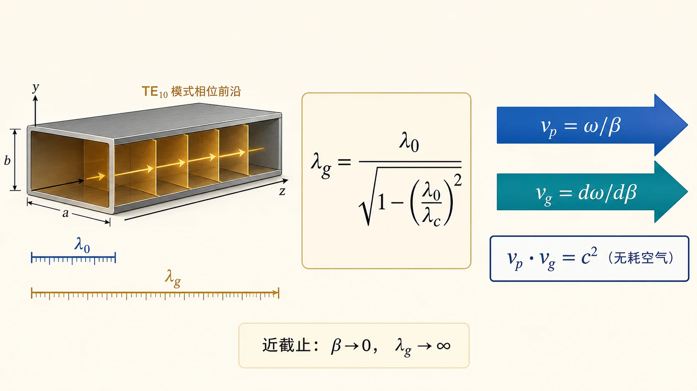
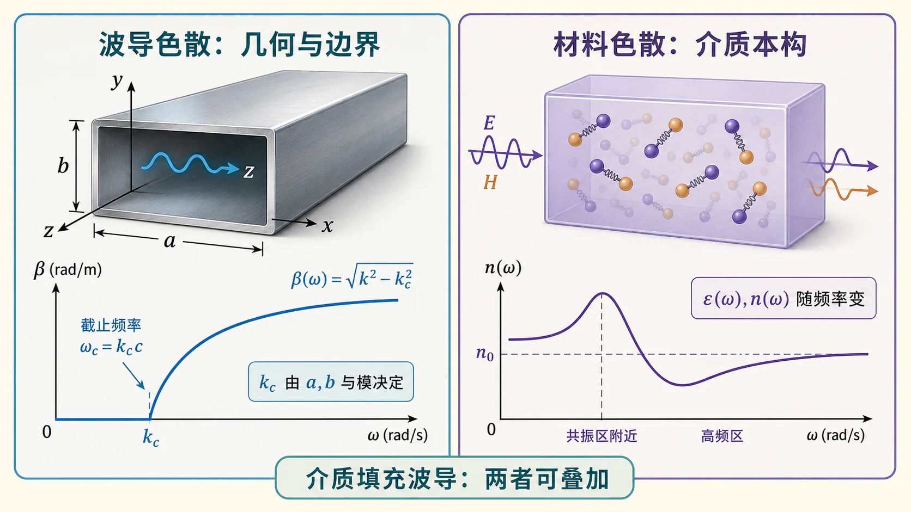
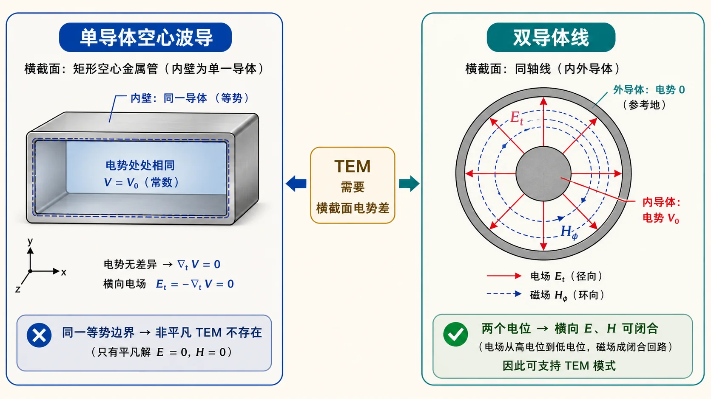

第三次作业 · Lec11～12（波导波长与色散、无 TEM）§
对应知识点：README
导航： 总目录 · 符号与导读 · Lec10–11 · Lec11～12 · Lec13–Lec16 · 附录
对应大纲：Lec11～12；教材：北理工 §2.2，华科 §2.2。
作业 1）工作波长、截止波长、波导波长：含义、关系与区别§
下面三个「波长」量纲相同（都是长度），但物理对象不同：$\lambda_0$ 描述你在多高的频率上工作；$\lambda_{\mathrm c}$ 描述这一几何、这一模能不能传；$\lambda_{\mathrm g}$ 描述一旦能传，沿管子轴向相位重复有多「稀」。答题时先分别定义，再写色散关系把它们连起来。

先把三种长度放在不同“位置”理解：$\lambda_0$ 属于工作频率，$\lambda_{\mathrm c}$ 属于几何门槛，$\lambda_{\mathrm g}$ 属于已经导行后的轴向相位。这样后面算波节距或螺钉位置时，就不会误用 $\lambda_0$。
（1）工作波长 $\lambda_0$（常记 $\lambda$，作业与教材也常混用记号）§
含义：由工作频率 $f$ 与填充介质中平面波的相速共同决定的空间周期。在空气（$\varepsilon_{\mathrm r}\approx 1$）中常写
$$ \lambda_0=\frac{c}{f},\qquad c\approx 3\times 10^8\,\mathrm{m/s}. $$
前置知识（与本题「工作波长」一句有关）：下面两个记号在空气里常不出现，但一旦题目改成介质填充或比较「真空 / 空气 / 介质」尺度，就要用到。
① 相对介电常数 $\varepsilon_{\mathrm r}$ 与假定 $\mu_{\mathrm r}=1$
- $\varepsilon_{\mathrm r}$：介质相对真空的介电常数之比，$\varepsilon=\varepsilon_{\mathrm r}\varepsilon_0$，无量纲；真空 $\varepsilon_{\mathrm r}=1$，一般电介质 $\varepsilon_{\mathrm r}>1$（微波工程里常见几到十几）。它决定介质中的波数 $k=\omega\sqrt{\mu\varepsilon}$ 比真空大多少。
- $\mu_{\mathrm r}=1$：假定介质非磁性（$\mu=\mu_0$），许多电介质在微波频段可这样近似；若 $\mu_{\mathrm r}\neq 1$，则 $k=\omega\sqrt{\mu_0\varepsilon_0}\sqrt{\mu_{\mathrm r}\varepsilon_{\mathrm r}}=k_0\sqrt{\mu_{\mathrm r}\varepsilon_{\mathrm r}}$，下文要同时保留 $\mu_{\mathrm r}$。
② 无界介质中的波长 $\lambda$ 与 $\lambda_0$ 的关系（在 $\mu_{\mathrm r}=1$ 时）
时谐平面波在均匀介质中的波数 $k=\omega\sqrt{\mu_0\varepsilon_0\varepsilon_{\mathrm r}}=k_0\sqrt{\varepsilon_{\mathrm r}}$，而 $k=2\pi/\lambda$，$k_0=2\pi/\lambda_0$（同一频率 $f$ 下真空中的波长记为 $\lambda_0=c/f$）。两式相除得
$$ \frac{2\pi}{\lambda}=\frac{2\pi}{\lambda_0}\sqrt{\varepsilon_{\mathrm r}} \quad\Rightarrow\quad \lambda=\frac{\lambda_0}{\sqrt{\varepsilon_{\mathrm r}}}. $$
即：同一频率下，介质中的波长比真空（或空气，$\varepsilon_{\mathrm r}\approx 1$）更短，因为相速 $v_{\mathrm p}=\omega/k=c/\sqrt{\varepsilon_{\mathrm r}}$ 变小。
与本题的关系：本题主干用空气时，取 $\varepsilon_{\mathrm r}\approx 1$，工作波长就写成 $\lambda_0=c/f$ 即可。若作业或考试问「介质填充波导中的工作波长 / 波数」，应先把 $k$ 换成 $k_0\sqrt{\varepsilon_{\mathrm r}}$（及相应的 $\lambda$），再代入 $k^2=k_{\mathrm c}^2+\beta^2$ 讨论 $\lambda_{\mathrm g}$、截止等——概念结构不变，只是把「无界介质里的 $k,\lambda$」从真空换到介质。
要点：$\lambda_0$ 是「无界均匀介质里、与 $f$ 配套」的尺度；它不是波导轴线上相邻等相位面间距。波导里沿 $z$ 的相位周期由 $\lambda_{\mathrm g}$ 描述。
（2）截止波长 $\lambda_{\mathrm c}$（对某一固定模 $\mathrm{TE}_{mn}$ 或 $\mathrm{TM}_{mn}$）§
含义：该模刚好能导行（传播常数 $\beta=0$）时，与截止频率 $f_{\mathrm c}$ 对应的空间尺度。与截止波数 $k_{\mathrm c}$ 的关系为
$$ \lambda_{\mathrm c}=\frac{2\pi}{k_{\mathrm c}},\qquad f_{\mathrm c}=\frac{c\,k_{\mathrm c}}{2\pi}\ \text{（空气近似）}. $$
矩形波导：$k_{\mathrm c}=\sqrt{(m\pi/a)^2+(n\pi/b)^2}$，故 $\lambda_{\mathrm c}$ 只与截面尺寸 $a,b$ 与模指数 $(m,n)$ 有关，与当前工作频率无直接关系（同一波导、不同模有不同 $\lambda_{\mathrm c}$）。
导行条件（与作业、第三次作业附录一致）：该模能远距离导行当且仅当 $\beta$ 为实数，等价于（无耗均匀填充）
$$ k>k_{\mathrm c} \quad\Longleftrightarrow\quad \lambda_0<\lambda_{\mathrm c} \quad\Longleftrightarrow\quad f>f_{\mathrm c}. $$
若 $\lambda_0>\lambda_{\mathrm c}$（或 $f<f_{\mathrm c}$），则 $\beta$ 为虚数，场沿 $z$ 指数衰减，该模截止，不能作为导行模远距离传输。
（3）波导波长 $\lambda_{\mathrm g}$§
含义：导行波沿波导轴线（常取 $z$）传播时，相位变化 $2\pi$ 所经过的距离，即轴向相位常数 $\beta$ 所对应的波长：
$$ \lambda_{\mathrm g}=\frac{2\pi}{\beta}. $$
与 $\lambda_0,\lambda_{\mathrm c}$ 的关系（空气、无耗）：由色散 $k^2=k_{\mathrm c}^2+\beta^2$ 及 $k=2\pi/\lambda_0$ 得
$$ \beta=\frac{2\pi}{\lambda_0}\sqrt{1-\left(\frac{\lambda_0}{\lambda_{\mathrm c}}\right)^2}, \qquad \lambda_{\mathrm g}=\frac{\lambda_0}{\sqrt{1-(\lambda_0/\lambda_{\mathrm c})^2}}. $$
在可导行区间 $0<\lambda_0<\lambda_{\mathrm c}$ 内，根号为正实数，且 $\lambda_{\mathrm g}>\lambda_0$（波导内轴向相位重复比自由空间「更稀」）。
近截止：$\lambda_0\to\lambda_{\mathrm c}^-$ 时 $\beta\to 0^+$，故 $\lambda_{\mathrm g}\to\infty$；此时相速 $v_{\mathrm p}=\omega/\beta\to\infty$（理想无耗模型下的极限，物理上见教材对能量速度与损耗的讨论）。
（4）三者对照（答题可直接复述）§
| 名称 | 由谁决定 | 一句话 |
|---|---|---|
| 工作波长 $\lambda_0$ | 工作频率 $f$、介质 | 「这一工作点」在无界介质中的波长尺度。 |
| 截止波长 $\lambda_{\mathrm c}$ | 截面几何 $a,b$、模 $(m,n)$ | 「这一模能不能传」的临界波长；$\lambda_0<\lambda_{\mathrm c}$ 才能导行。 |
| 波导波长 $\lambda_{\mathrm g}$ | $\lambda_0$ 与 $\lambda_{\mathrm c}$ 通过 $\beta$ 耦合 | 「能传之后」沿轴向的相位重复距离；一般 $\lambda_{\mathrm g}>\lambda_0$。 |
易错点：不要把 $\lambda_0$ 当成沿波导轴线画驻波/行波时的间距；计算轴向电长度、螺钉位置等应用 $\lambda_{\mathrm g}$（见第三次作业 Lec13–16 与附录）。
作业 1 的延伸）色散：含义、成因、影响§

色散：传播常数 $\beta$ 对频率 $\omega$ 非线性（$\beta(\omega)$ 不是 $\omega/c$ 的简单比例），导致不同频率分量相速不同。
波导中的成因：导行条件使 $\beta=\sqrt{k^2-k_{\mathrm c}^2}$，其中 $k=\omega/c$（空气）而 $k_{\mathrm c}$ 与 $\omega$ 无关；因而 $v_{\mathrm p}=\omega/\beta$ 随 $\omega$ 变化。
影响：窄脉冲（宽频谱）在波导中传播会展宽；能量传播速度用群速 $v_{\mathrm g}=\mathrm d\omega/\mathrm d\beta$ 描述，且与 $v_{\mathrm p}$ 满足教材给出的关系（无耗空气填充时常用 $v_{\mathrm p}v_{\mathrm g}\approx c^2$）。
作业 1 的延伸）微波波导色散 vs 光学材料色散§
- 波导（结构）色散：源于边界约束与几何色散关系 $\beta=\sqrt{k^2-k_{\mathrm c}^2}$；即使介质 $\varepsilon$ 为常数仍存在。
- 光学材料色散：常指 $\varepsilon(\omega)$ 或折射率 $n(\omega)$ 随频率变化（电子共振等微观机制），在无界介质或 TEM 线中也会出现。
本质：前者是模式与几何导致的色散；后者是材料本构的频率色散。二者可同时存在（例如介质填充波导）。
作业 2）为什么单导体型波导不能传输 TEM 波？§

要点 1（静电）：TEM 要求横截面内存在满足 Laplace 方程且周界为等势的二维静电势解，使电场、磁场均在横截面内闭合。
要点 2（拓扑）：对单连通空心导体管内壁为同一等势面时，腔内拉普拉斯解退化为常数势，横截面内无电场，从而也不存在与之正交的横向磁场结构来维持沿 $z$ 的功率流。
要点 3（对比）：同轴线与平行双导线等双导体结构允许非平凡二维势分布，因而可支持 TEM。
（表述可与教材「单连通区域内调和函数极值原理」版本等价替换。）
若课堂强调「$k_{\mathrm c}=0$ 的 TEM 与空心波导边界条件矛盾」角度，请与教材图一并记忆。